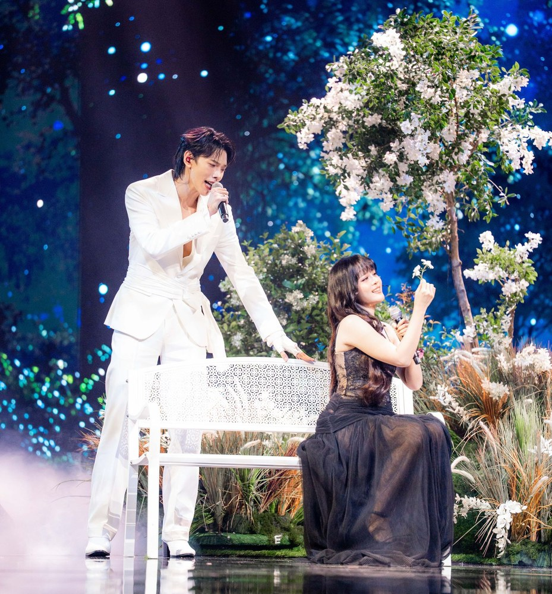

Thailand
Eurovision hostArtist

MANG x DAOU
Piyatida Lekklang
Pittaya Saechua
b. 2000, 1998
📍 Nakhon Ratchasima, Bangkok
Queer (DAOU)
MANG finished second on The Voice Kids Thailand in 2014.
MANG debuted in the mixed-gender group bamm in 2021 and launched her solo career in 2024.
DAOU won the music survival show LAZ iCON and became a member of the boy band LAZ1.
DAOU earned a degree in agricultural and resource economics.
In 2024, DAOU voiced Scar in the Thai dub of Mufasa: The Lion King.
DAOU is known for starring in BL series alongside actor Offroad.
Country
Thailand hosts the first Eurovision Asia in Bangkok on 14 November.
Song
Aroma
Scent of the Night
Aroma
Scent of the Night
| Moe mong duang duean thi khao ma tuean chai | I gaze at the moon, and it reminds me once again |
| Wa thoe la klai, mai mi thoe laeo | That you've gone far away, that you're no longer here. |
| Kliat kan wela thi ma phrak thoe chak chan pai | I hate the passing of time for tearing you away from me, |
| Thoe thi pen dang kaeo ta duang chai | You, who were the most precious thing in my life. |
| O anitcha, dai phop thoe phiang khae nitthra | Oh, what sorrow! Now I can only see you in my dreams, |
| Phro khwam pen ching rao tong la, ni ko mai phon | For in reality, we had to part, and there's no escaping it. |
| Klin hom ratri thi long loi tam sai lom | The fragrance of the night drifting upon the breeze |
| Chang wan pon khom, phro wa rao tong rang klai | Is so bittersweet, because we're so far apart. |
| Ko man khit thueng luea koen | I miss you more than words can say, |
| Ying duek ying nuek thueng thoe | The later it gets, the more I think of you. |
| O chai yai khwam khit thueng mai prani | Oh, my heart, why is this longing so merciless? |
| Thuk thuk ratri mi tae thoe nai hua chai | Every night, you're the only one in my heart. |
| Ko man khit thueng luea koen | I miss you more than words can say, |
| Noen nan thao rai thi rao mai dai kot kan | How long has it been since we last held each other? |
| Ma choe khae nai khwam fan ko yang di | Even seeing you in a dream would be enough. |
| Thuk thuk ratri, chang noen nan, cha phan khuen ni pai chen rai | Every night feels endless. How will I get through this one? |
| Tha hak mi okat ik sak khrang | If I could have just one more chance, |
| Ko yak nang khui duai lae tham thai | I'd love to sit with you, talk, and ask how you've been. |
| Suan chan yang wai, phro chan yu dai | As for me, I'm doing fine, I'm managing, |
| Mai tong pen huang | So please don't worry about me. |
| Mi rueang rao mak mai yak lao hai fang | There are so many stories I want to tell you |
| Tang tae muea wan thi rao mai choe | About everything that's happened since we last met. |
| Chan yak phop thoe phuea kot sak khra | I wish I could see you, hold you one more time, |
| Lae klao amla pen khrang sut thai | And say goodbye for the very last time. |
| O anitcha, dai phop thoe phiang khae nitthra | Oh, what sorrow! Now I can only see you in my dreams, |
| Phro khwam pen ching rao tong la, ni ko mai phon | For in reality, we had to part, and there's no escaping it. |
| Klin hom ratri thi long loi tam sai lom | The fragrance of the night drifting upon the breeze |
| Chang wan pon khom, phro wa rao tong rang klai | Is so bittersweet, because we're so far apart. |
| Ko man khit thueng luea koen (Khit thueng luea koen) | I miss you more than words can say (I miss you so much), |
| Ying duek ying nuek thueng thoe (Ying khit thueng thoe) | The later it gets, the more I think of you (The more I think of you). |
| O chai yai khwam khit thueng mai prani | Oh, my heart, why is this longing so merciless? |
| Thuk thuk ratri mi tae thoe nai hua chai | Every night, you're the only one in my heart. |
| Ko man khit thueng luea koen | I miss you more than words can say, |
| Noen nan thao rai thi rao mai dai kot kan | How long has it been since we last held each other? |
| Ma choe khae nai khwam fan ko yang di (Nai fan ko yang di) | Even seeing you in a dream would be enough (Even in a dream). |
| Thuk thuk ratri, chang noen nan, cha phan khuen ni pai chen rai | Every night feels endless. How will I get through this one? |
| Ma choe khae nai khwam fan ko yang di | Even seeing you in a dream would be enough. |
| Thuk thuk ratri, chang noen nan | Every night feels endless. |
| Cha phan khuen ni pai chen rai | How will I get through this one? |